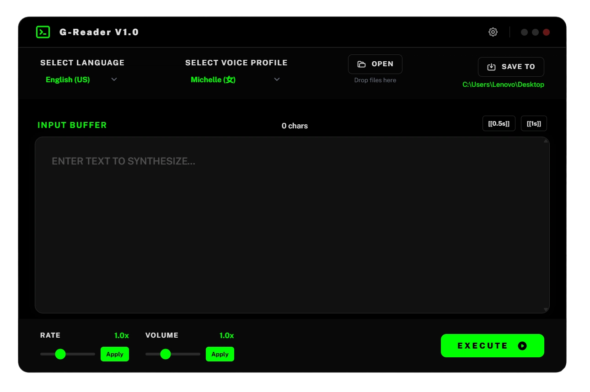
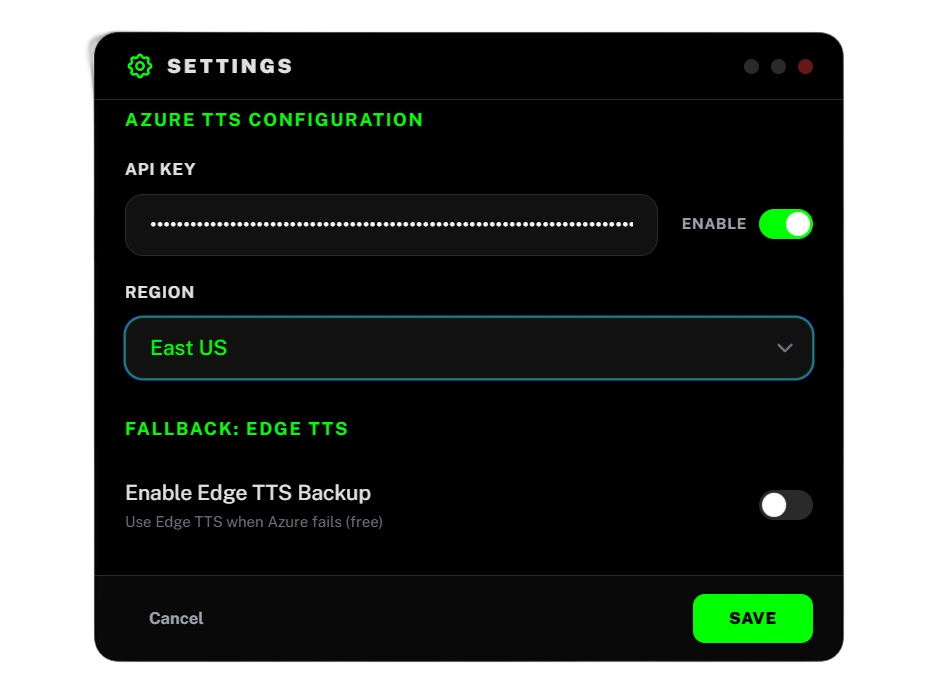

G-Reader converts text to natural-sounding audio using Azure Neural Voices or Edge TTS. Zero registration, instant output. Free to start.
Windows 10/11 (64-bit) · No Python required · No signup

Main Interface

Settings Panel
No account. No API key. No waiting. Just type, pick a voice, and export.
Type or paste any text into the input buffer. Or drag & drop a .txt / .pdf file.
Choose from 18 languages and 100+ neural voice profiles. Adjust speed and volume inline.
Click Execute. Your audio file is saved instantly to your chosen folder.
characters per month · resets on the 1st of every month · no credit card charged
When your quota runs out, Azure simply pauses the service. No auto-charges. No surprise bills.
Built for speed and simplicity — without sacrificing the controls that matter.
From Mandarin to Mexican Spanish — every major language covered. Male, female, and child voices available.
Neural-quality audio generated in seconds. No cloud upload, no waiting in a processing queue.
Select any portion of your text and apply a different speed or volume. Only Azure TTS supports this.
Insert 0.5s or 1s pauses anywhere in the text. Perfect for dramatic effect or natural pacing.
Drag and drop a PDF file directly into G-Reader. Text is extracted automatically — no extra tools needed.
If Edge TTS hits a rate limit, G-Reader automatically falls back to Azure TTS — if configured.
Live character count in the input buffer so you always know how much you're synthesizing.
Pick any folder for your output WAV files. The path is remembered between sessions.
Both are built into G-Reader. Switch between them anytime in Settings.
| Free Edge TTS | High Quality Azure Neural | |
|---|---|---|
| Cost | Free, no account | Free tier: 500K chars/mo |
| Quality | Good | Industry-leading neural |
| Inline speed / volume control | — not supported | ✓ Full SSML support |
| Custom pauses (0.5s / 1s) | — not supported | ✓ |
| Voice variety | Limited | 100+ neural voices |
| Stability | May be throttled by Microsoft | Always stable |
| Best for | Quick tests, short clips | Audiobooks, bulk output |
From quick clips to full-length audiobooks — if there's text, G-Reader can speak it.
Batch-convert chapters into consistent, high-quality WAV files. Azure Neural handles long-form content reliably.
Convert written transcripts into voice recordings so you can listen back during your commute or workout.
Generate voiceover drafts for YouTube videos, tutorials, or presentations without a microphone.
Slow down any text to 0.5x speed to practise listening. Use different voices to hear pronunciation variety.
Turn articles, documents, or web content into audio for screen reader alternatives.
Quickly produce narrated course materials from scripts. Bulk-export with consistent voice settings.
"下载完就能用，什么账号都不用注册。Edge模式跑了几下出了结果，要长期用的时候再注册Azure。"
"做有声书批量出品，Azure的免费额度完全够用。50万字符一个月，换算下来相当于3-4本中长篇。"
Free to download. No account needed. No credit card required.
v1.0.0 · Windows 10/11 (64-bit) · ~45 MB installer
No. Edge TTS works immediately after installation with no registration at all. Azure TTS is optional and only requires an account if you want the higher quality voices.
No. Azure's free tier policy is simple: when your 500K-character monthly quota is exhausted, the service pauses. It does not switch to pay-as-you-go and it does not charge your card. Your quota resets on the 1st of the next month automatically.
Edge TTS uses Microsoft's unofficial API interface, which is subject to rate limiting — especially during peak hours. This is outside G-Reader's control. For reliable, uninterrupted output, configure Azure TTS instead.
Azure Neural Voices are engineered for clarity and naturalness, not emotional expression. This is a fundamental characteristic of current neural speech synthesis technology. You can improve perceived expressiveness by using inline speed control and custom pauses.
G-Reader requires an internet connection to call the Edge or Azure TTS servers. Your text is sent to Microsoft for processing and the audio is returned — it is not synthesized locally.
Currently WAV (uncompressed PCM). This preserves the highest audio quality. You can convert WAV to MP3 later using any free tool if needed.